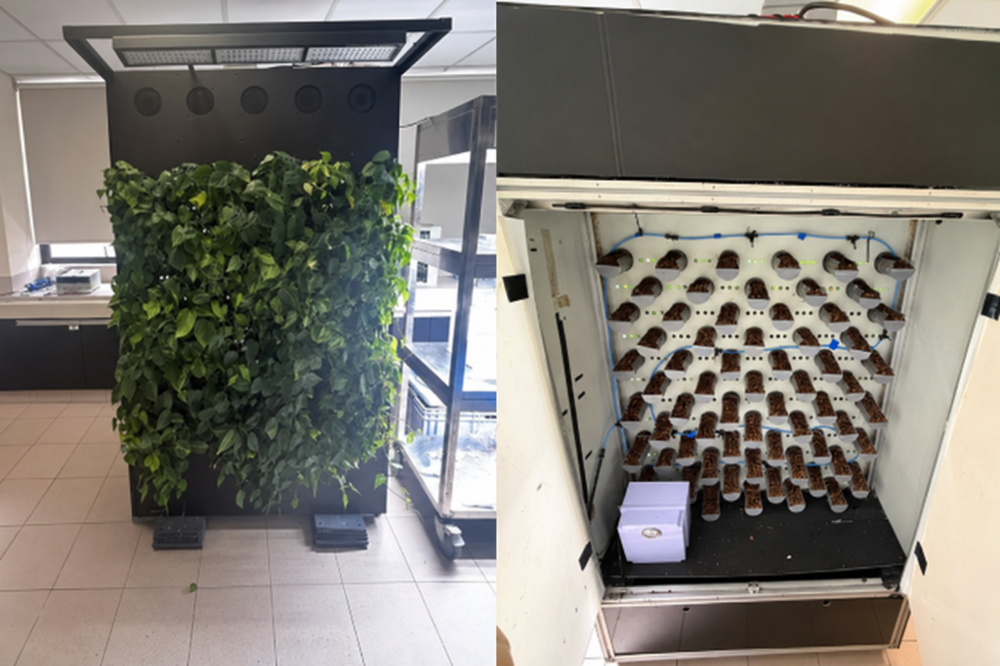
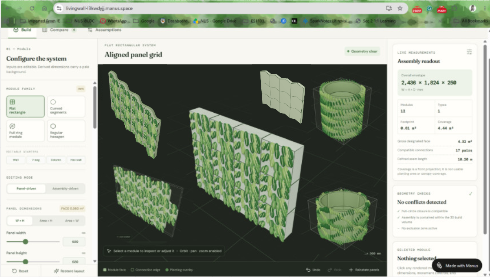
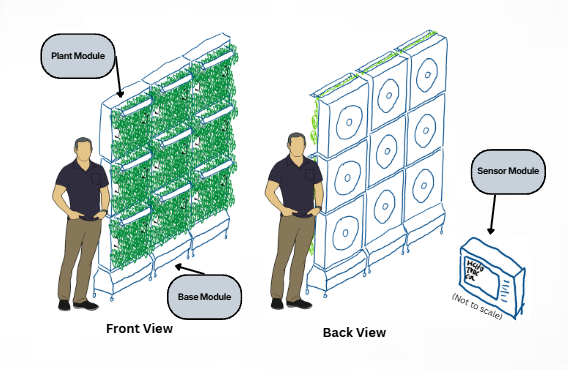

4.1 Reference System and Plant
The existing Flora Aer prototype serves as the reference system for this project. It combines fan-assisted airflow through a planted growing medium with supplementary lighting and mist irrigation. Figure 9 shows its planting face and rear arrangement, providing a practical reference for accommodating the plants and integrating the services needed to sustain their operation.

The prototype uses Philodendron scandens, with supporting research also reported under Philodendron hederaceum. Suárez-Cáceres & Patricia (2021) tested a planted felt wall in a sealed chamber under formaldehyde exposure, recording about 83% reduction in TVOC readings after 15 minutes and 96% after one hour, relative to the empty-chamber baseline. These measurements used a TVOC detector rather than a formaldehyde-specific instrument. For PM₂.₅, Patil & Patil (2026) investigated a passive green wall planted with Philodendron scandens in an occupied office. Average PM2.5 concentrations decreased from approximately 34 to 28 µg/m³, with a reported reduction of 15.7%. This provides supporting evidence from passive planting (non-active) rather than direct validation of fan-assisted filtration.
Adopting the Flora Aer plant system provides a consistent basis for engineering development. Reference measurements inform pot accommodation and planting spacing (see Appendix 3), while plant requirements guide lighting and irrigation.
4.2 Modular Configuration Selection
For module configurations, an interactive configuration visualisation was used to visualise different ways of designing our modular system.
View the report’s static preview

The proposed system uses repeatable flat, square plant modules that can be combined into horizontal and vertical arrays. Configuration selection was guided by four principal criteria: manufacturability, transportability, inter-module connectivity and plant spacing design.
Table 6 presents a qualitative comparison of flat, square modules against other configurations. The comparison concerns their suitability for sheet-based manufacturing and assembly approach, it is not an experimental ranking of purification performance.
Criterion | Flat, square modules | Hexagonal, Chevron, Wavy or Cylindrical |
|---|---|---|
Manufacturability | • Planar parts suit the planned laser-cutting process. • Repeated rectangular components simplify fabrication and assembly. | • Hexagonal and chevron forms remain compatible with laser cutting but require additional angled-joint detailing. • Curved designs require forming processes as raw materials are usually flat. |
Transportability | • Flat housing parts can be stacked before assembly. • Completed modules pack regularly for transport. | • Packing depends on the geometry and whether components can nest or separate. • Curved forms require additional consideration for compact transport. |
Inter-module connectivity | • Repeated straight edges provide consistent alignment and fastening locations. • Horizontal and vertical connections simplify irrigation and electrical routing. | • Angled or curved interfaces require additional joint detailing. • Multiple connection directions for hexagonal form complicate standardising service connections. |
Plant spacing design | • A regular grid simplifies maintaining consistent plant spacing within and across adjoining modules. | • Angled boundaries, recesses and curvature require more careful plant positioning to maintain spacing and canopy clearance across modules. |
Flat, square modules were selected because they provide the most practical route to repeatable fabrication and assembly within the current project resources. The repeated geometry supports individual-module replacement. Permitted array sizes will also depend on design requirements (see Table 5), irrigation capacity, and testing of individual modules.
4.3 Overall System Architecture
The system is organised into three interacting subsystems: plant modules, base modules and a separate sensor module. Functions directly associated with each planting face are repeated within the plant modules, while support and shared services are concentrated in the base.

Subsystem | Principal functions and components |
|---|---|
Plant module | Accommodates the plants and growing medium, airflow chamber, fan, baffle, misting hardware and local lighting. |
Base Module | A hybrid base houses the reservoir, pump and controller; supplementary reservoir bases increase water storage where required. |
Sensor module | Measures selected indoor air-quality parameters, displays readings and communicates relevant information to the base controller. |
The intended airflow path directs room air into the module chamber, distributes it across the planting face and passes it through the growing medium before returning it to the room. Sealing around the pots and holder is required to limit untreated bypass flow. The detailed inlet location and flow direction are shown in the engineering drawings.
Mechanical, water and electrical interfaces will be designed to support repeatable assembly and access for maintenance. Their detailed construction and connection methods are addressed in the Detailed Design section.
4.4 Concept Features Rationale
The proposed concept translates the design considerations in Table 4 into the features summarised below. These features establish the intended system functions while their effectiveness will be assessed during prototype testing.
Design Consideration | Proposed feature | How the feature addresses it |
|---|---|---|
Modularity and mobility | Repeatable plant modules and wheeled bases |
|
Visibility of air quality | Separate sensor module with an accessible display |
|
Feedback capability | Threshold-based operating control |
|
Verified treatment capacity | Individually testable modules and configurable assemblies |
|